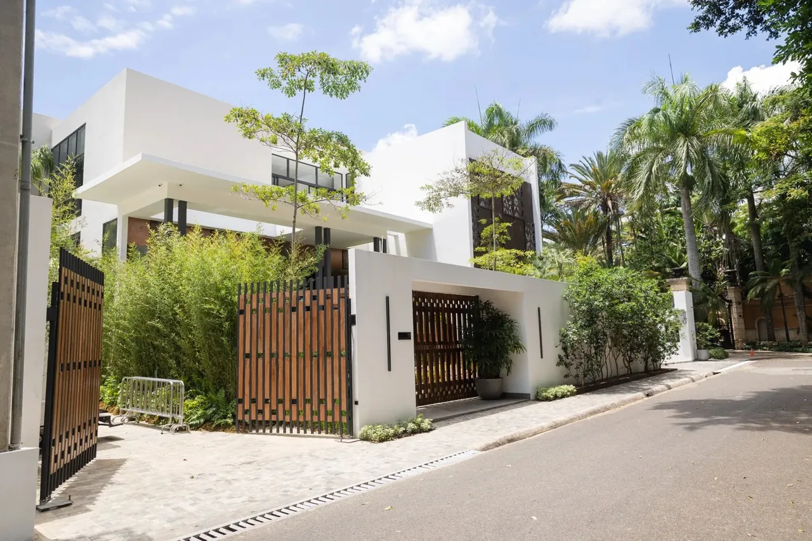
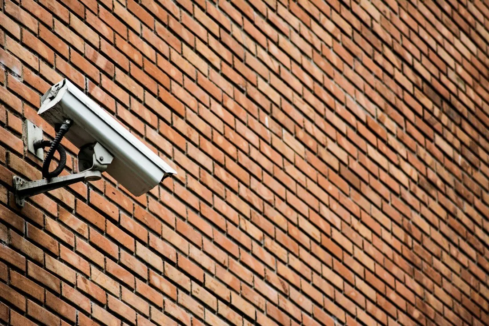
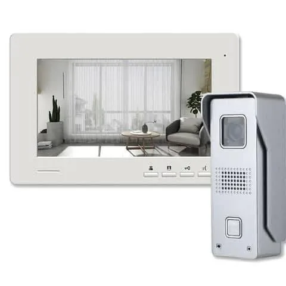
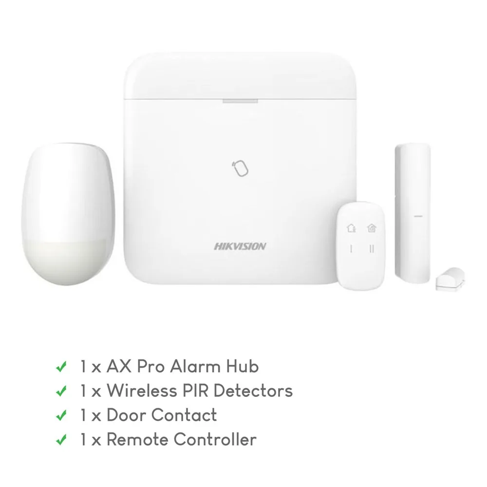
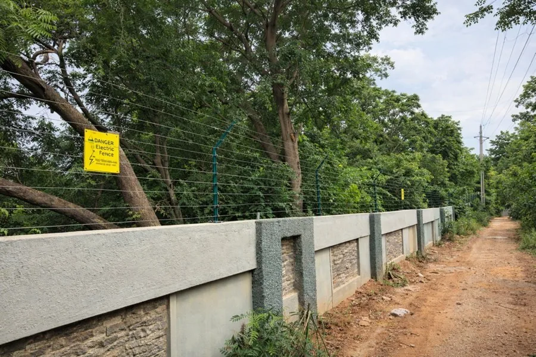
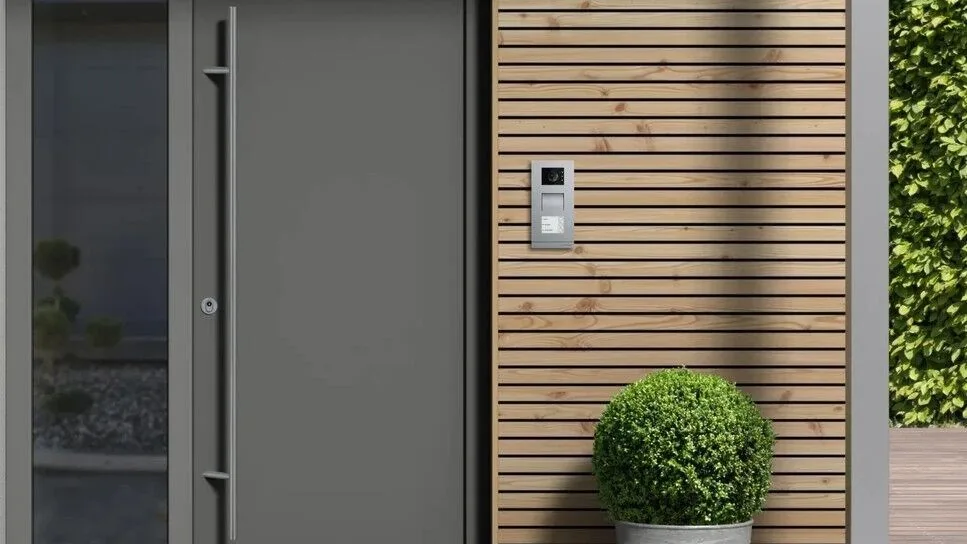

Les accès que vous utilisez
Le portail principal, une porte secondaire, une réserve : indiquez les endroits qui comptent.
SÉCURITÉ CONNECTÉE / CÔTE D’IVOIRE
Caméras, visiophones, alarmes et clôtures électriques : depuis Bingerville, Digital Bâtiment équipe vos maisons et vos locaux professionnels dans toute la Côte d’Ivoire.

UN BÂTIMENT, PLUSIEURS POINTS À ÉTUDIERRepères d’étude sur une photo d’illustration
DU SEUIL DE LA MAISON AUX ACCÈS DE L’ENTREPRISE
Le matériel vient ensuite : le point de départ, c’est la situation que vous souhaitez mieux gérer.
Entrée, cour, réserve : déterminer où placer les caméras et comment consulter les images.

Échanger avec les visiteurs depuis un écran intérieur ou envisager les fonctions d’un modèle connecté.

Étudier les points d’accès, les zones de détection et le mode d’alerte à prévoir.

Examiner le mur existant, les accès et les contraintes du site avant de définir la clôture.


LA TECHNOLOGIE TROUVE SA PLACE DANS VOTRE QUOTIDIENUn visiophone commence par un besoin concret : savoir qui se présente. Le choix de l’écran, de la platine et des fonctions se fait à partir de votre entrée et de votre façon de l’utiliser.
Parlons de mon entréePhoto d’illustration · Fonctions et compatibilité à préciser selon le modèle
Maison, commerce ou site d’activité : explorez les besoins à examiner selon votre environnement.
L’entrée, la cour et les accès secondaires peuvent avoir des besoins différents. Pensez votre protection selon vos habitudes et votre bâtiment.
Exemples d’usage : la configuration sera définie après étude de votre site.
Ce sont souvent ces détails qui rendent le premier échange utile.
Le portail principal, une porte secondaire, une réserve : indiquez les endroits qui comptent.
Identifier un visiteur, surveiller une cour, détecter une intrusion : formulez votre priorité.
Des caméras, un câblage, une connexion : quelques références et photos aideront à préparer l’étude.
Sélectionnez les situations qui vous concernent. Vos choix pourront accompagner votre demande de devis.
DIGITAL BÂTIMENT
Repérez vos accès et les zones que vous souhaitez surveiller. Quelques photos et les références des équipements existants permettront de préparer l’étude du câblage et des possibilités d’installation.
Précisez cette attente dès le départ. L’accès à distance dépend du matériel, de sa configuration et de la connexion disponible sur le site.
Indiquez les équipements que vous souhaitez maintenir en fonctionnement et la durée souhaitée. L’alimentation de secours sera un point à étudier dans votre projet.
Le guide ci-dessus permet de sélectionner plusieurs priorités. Vous pourrez reprendre cette sélection dans le formulaire de contact et la compléter avec les particularités de vos locaux.